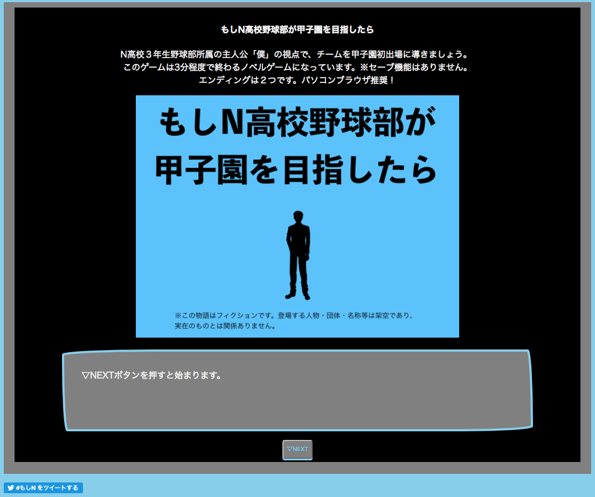
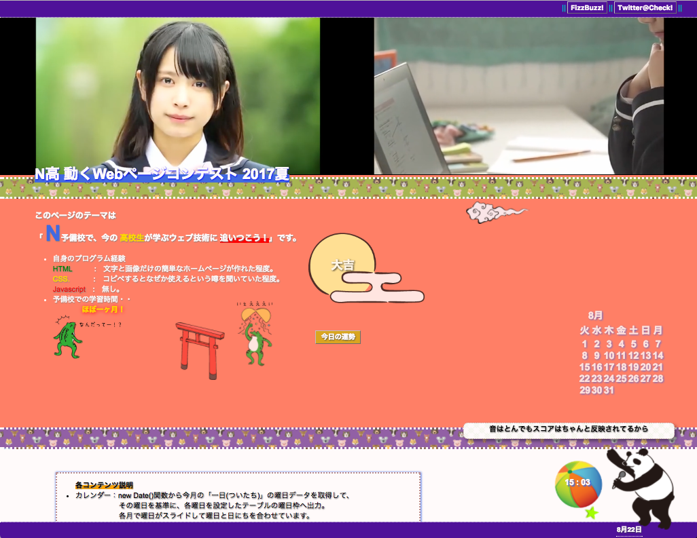
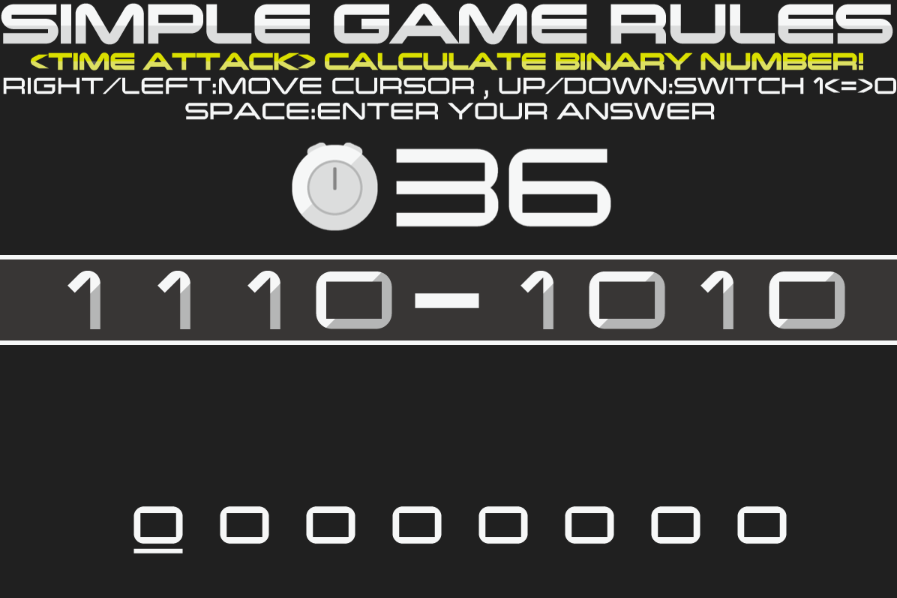

評価コメントは個別に送らさせていただきます。
もしN高校野球部が甲子園を目指したら
「高校」がテーマということで、高校といえば甲子園！と思い。 甲子園に関する動くwebページにしようと考えました。 甲子園をテーマにしたノベルゲームを作るという方向性で作成しています。 自身のプログラミング技術でできるかどうかわかりませんでしたが、「既存のノベルゲームにできるだけ自作プログラムで近づけるか？」を目標に作ってみました。楽しんでいただければ幸いです。
コーディング技術 20点、アイデア 15点、完成度 25点、総合 60点
ムキムキにならないか？
高校生が体を鍛えたいときにトレーニングメニューを組んでくれるツールです。

コーディング技術 15点、アイデア 10点、完成度 10点、総合 35点
受講一か月の予備校生によるWebページ
プログラミングを覚えて一か月で、どこまで自分がジャバスクリプトのウェブページを作れるのかに挑戦したものです。（作品内容は、作品ページの中に書き込んであります）
コーディング技術 30点、アイデア 10点、完成度 30点、総合 70点
jsvisu
即興で作ったオーディオビジュアライザです。mp3やoggをドラッグ&ドロップで再生できます。本当はシンセサイザーが作りたかったのですが忙しくて時間が足りませんでした。

コーディング技術 25点、アイデア 10点、完成度 25点、総合 60点
Wordbook Project
ポチポチ押したくなるデザインになるように工夫しました

コーディング技術 20点、アイデア 30点、完成度 30点、総合 80点
BINARIST
テーマである高校の要素の一つ「学習」にフォーカスした作品です。N高が学習方針の一つとして掲げている「プログラミング」を主体として、計算能力と英語力が鍛えられます。作品はミニゲームとなっていて、プログラミングで必須となる進数変換が瞬時に行えるようになります。操作性を向上させるために、作品で使用するキーをスペースキーと矢印キーだけにしました。UIのデザインはゲームの世界観を損なわないように、自分で製作しました。見易さも重視しています。お忙しい中で恐縮ですが、作品のプレイを宜しくお願い致します。
コーディング技術 15点、アイデア 30点、完成度 30点、総合 75点